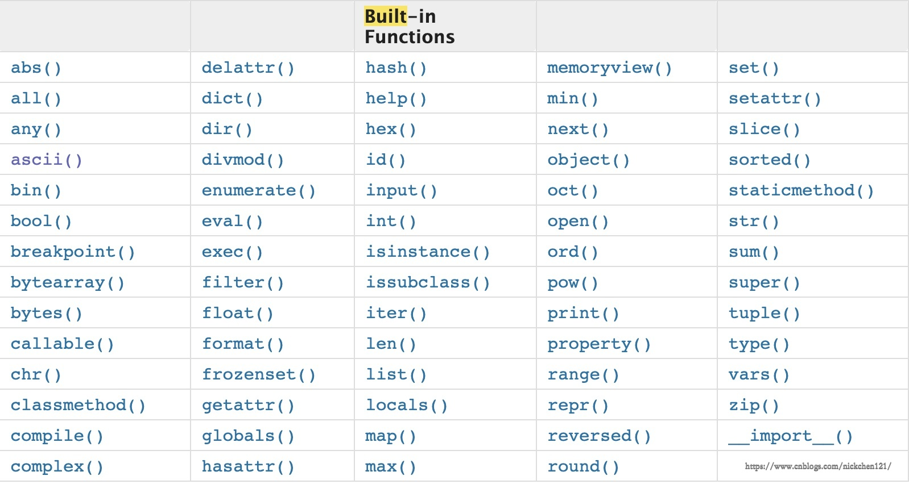

原文连接:https://www.cnblogs.com/leaf-wind/p/11352238.html
递归
递归的本质就是函数调用自身，当然也会有一些限制条件，在这里我们思考一个问题，你能递归你自己吗？或者说人能调用自己吗？
暂且不论...
函数自我嵌套
def foo():
print('from foo')
foo()
foo() # 进入死循环你看，这几行代码一执行就陷入了死循环，所以递归肯定需要一个明确的限制条件
1.png)
调用
直接调用
直接调用就是直接在函数内部调用自身
import sys
# 修改递归层数
sys.setrecursionlimit(10000)
def foo(n):
print('from foo',n)
foo(n+1)
foo(0)间接调用
间接调指的是不在函数体内调用函数自身，而是通过其他方法间接调用函数自身
def bar():
print('from bar')
foo()
def foo():
print('from foo')
bar()
bar()2.png)
那么递归呢，有两个明确的阶段：
- 递推：一层一层递归调用下去，进入下一层递归的问题规模都将会减小
- 回溯：递归必须要有一个明确的结束条件，在满足该条件开始一层一层回溯。
递归的精髓在于通过不断地重复逼近一个最终的结果。
'''
...
age(5) = age(4) + 2
age(4) = age(3) + 2
age(3) = age(2) + 2
age(2) = age(1) + 2
age(1) = 26
age(n) = age(n-1) +2
age(1) = 26 # n=1
'''
def age(n):
if n == 1:
return 26
res = age(n-1) + 2
return res
print(f"age(5): {age(5)}")age(5)：34
为什么要用递归呢
递归的本质就是干重复的活，但是仅仅是普通的重复，我们使用while循环就可以了
lis = [1, [2, [3, [4, [5, [6, ]]]]]]
def tell(lis):
for i in lis:
if type(i) is list:
tell(i)
else:
print(i)
# print(f"tell(lis): {tell(lis)}")
tell(lis)1
2
3
4
5
6
3.png)
如何使用递归
这里介绍一个二分法的应用
有一个从小到大排列的整型数字列表，我们判断某一个数字是不是在这个列表里面。
from random import randint
nums = [randint(1, 100) for i in range(100)]
nums = sorted(nums)
print(nums)[1, 2, 4, 5, 5, 5, 6, 6, 6, 7, 7, 7, 10, 11, 11, 11, 11, 12, 13, 13, 15, 16, 16, 20, 21, 21, 23, 24, 26, 26, 27, 28, 28, 31, 33, 33, 34, 35, 38, 38, 39, 40, 42, 43, 45, 45, 46, 46, 47, 47, 51, 52, 52, 53, 53, 55, 55, 56, 56, 57, 57, 57, 58, 59, 61, 62, 64, 66, 66, 67, 68, 69, 69, 71, 72, 72, 74, 74, 75, 76, 78, 78, 79, 79, 79, 79, 80, 82, 85, 88, 89, 90, 90, 91, 91, 91, 94, 99, 99, 100]def search(search_num, nums):
mid_index = len(nums)//2
print(nums)
if not nums:
print('not exists')
return
if search_num > nums[mid_index]:
# in the right
nums = nums[mid_index+1:]
search(search_num, nums)
elif search_num < nums[mid_index]:
# in the left
nums = nums[:mid_index]
search(search_num, nums)
else:
print('find it')
search(7, nums)二分法简单来说就是不停地找中值嘛，使用递归来找，不断缩小范围直到找到为止，代码自行去理解哦
4.png)
内置函数

6.png)
这里只介绍一部分哈...
掌握
bytes()
解码字符
res = '你好'.encode('utf8')
print(res)
##b'\xe4\xbd\xa0\xe5\xa5\xbd'chr()/ord()
chr()参考ASCII码表将数字转成对应字符；ord()将字符转换成对应的数字。
print(chr(65))
##A
print(ord('A'))
##65divmod()
分栏
print(divmod(10, 3))
##(3, 1)enumerate()
带有索引的迭代。
l = ['a', 'b', 'c']
for i in enumerate(l):
print(i)
##(0, 'a')
##(1, 'b')
##(2, 'c')eval()
把字符串翻译成数据类型。
lis = '[1,2,3]'
lis_eval = eval(lis)
print(lis_eval)
##[1, 2, 3]hash()
是否可哈希。
print(hash(1))
##17.png)
了解
abs()
求绝对值。
print(abs(-13)) # 求绝对值
##13all()
可迭代对象内元素全为真，则返回真。
print(all([1, 2, 3, 0]))
print(all([]))
##False
##Trueany()
可迭代对象中有一元素为真，则为真。
print(any([1, 2, 3, 0]))
print(any([]))
##True
##Falsebin()/oct()/hex()
二进制、八进制、十六进制转换。
print(bin(17))
print(oct(17))
print(hex(17))
##0b10001
##0o21
##0x11dir()
列举出所有time的功能。
import time
print(dir(time))
##['_STRUCT_TM_ITEMS', '__doc__', '__loader__', '__name__', ##'__package__', '__spec__', 'altzone', 'asctime', 'clock', ##'ctime', 'daylight', 'get_clock_info', 'gmtime', 'localtime', ##'mktime', 'monotonic', 'perf_counter', 'process_time', 'sleep', ##'strftime', 'strptime', 'struct_time', 'time', 'timezone', ##'tzname', 'tzset']frozenset()
不可变集合。
s = frozenset({1, 2, 3})
print(s)
##frozenset({1, 2, 3})globals()/loacals()
查看全局名字；查看局部名字。
# print(globals())
def func():
a = 1
# print(globals())
print(locals())
func()
##{'a': 1}pow()
print(pow(3, 2, 3)) # (3**2)%3
##0round()
print(round(3.5))
##4slice()
lis = ['a', 'b', 'c']
s = slice(1, 4, 1)
print(lis[s]) # print(lis[1:4:1])
##['b', 'c']sum()
print(sum(range(100)))
##4950.__import__()
通过字符串导入模块。
m = __import__('time')
print(m.time())
##1556607502.334777面向对象方法
- classmethod
- staticmethod
- property
- delattr
- hasattr
- getattr
- setattr
- isinstance()
- issubclass()
- object()
- super()
8.png)
面向过程编程
面向过程编程是解决问题的一种思想，相当于武林门派，武林门派之间没有好坏之分，因此它与我们之后学习的面向对象编程其实没有好坏之分。
面向过程编程，核心是编程二字，过程指的是解决问题的步骤，即先干什么、后干什么、再干什么、然后干什么……
基于该思想编写程序就好比在设计一条流水线，面向对称编程其实是一种机械式的思维方式。
当我们写登录功能，我们首先需要输入账号、密码，然后认证两次密码是否相同，然后从数据库中读取密码验证用户密码输入是否正确，然后输入验证码……之后，我们就能够实现登录功能。这样把登录功能问题流程化，进而是解决问题的思路非常清晰。
优点：复杂的问题流程化，进而简单化。
注册
1.1 接受用户输入用户名，进行合法性校验，拿到合法的用户名
def check_username():
username = input('username>>>').strip()
if username.isalpha():
return username
else:
print('用户名必须为字母，傻叉')1.2 接受用户输入密码，进行合法性校验，拿到合法的密码
def check_pwd():
while True:
pwd = input('password>>>').strip()
if len(pwd) < 5:
print('密码长度至少五位')
continue
re_pwd = input('re_password>>>').strip()
if pwd == re_pwd:
return pwd
else:
print('两次输入密码不一致')1.3 将合法的用户名和密码写入文件
def insert(username, pwd, path='57.txt'):
with open(path, 'a', encoding='utf8') as fa:
fa.write(f'{username}:{pwd}\n')1.4 注册
def register():
username = check_username()
pwd = check_pwd()
insert(username, pwd)
print(f'{username}注册成功')
register()
username>>>nick
password>>>12345
re_password>>>12345
nick注册成功如果现在我们需要校验用户的年龄，因此我们需要增加一个check_age()方法，并且其他有牵连的地方都需要修改，因此它的扩展性极差。
分层实现功能
生产汽水瓶的流水线，没办法生产特斯拉。流水线下一个阶段的输入与上一个阶段的输出是有关联的。因此他的扩展性极差。
缺点：扩展性差。
- 用户功能层：实现用户具体的功能。
- 接口层：连接数据处理层和用户功能层。
- 数据处理层：处理数据后把结果交给接口层。
分层实现功能的好处：当我们需要实现web端和app端的软件，我们只要把数据处理层和接口层写好，然后实现不同的用户功能层即可，web端使用web端的用户功能层，app端使用app端的用户功能层，但是接口层和数据处理层是通用的。
9.png)